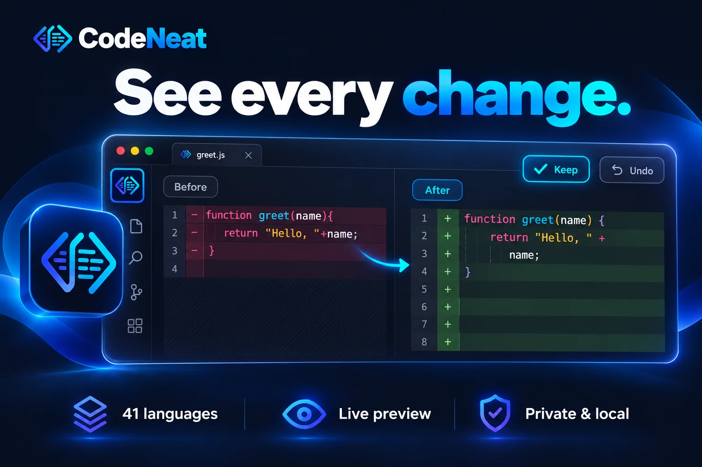
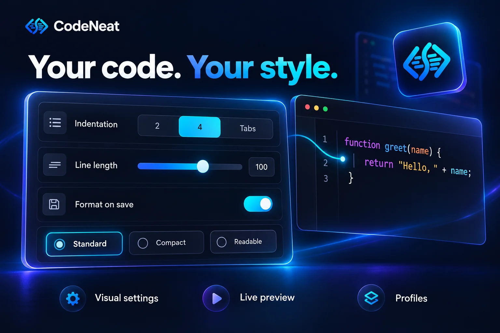
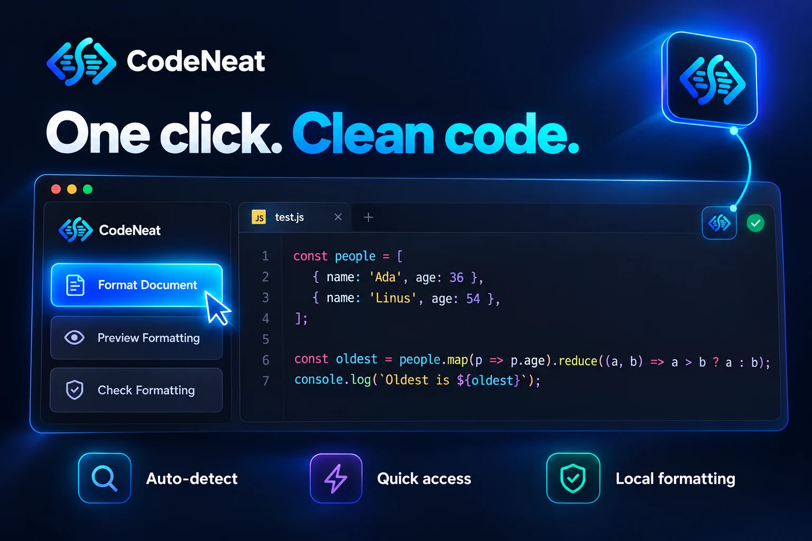

One code formatter for 41 languages in VS Code
CodeNeat formats any file with one click, shows you every change before you keep it, and lets you set your style from a visual dashboard. No config files. No AI tokens spent on indentation.
Or press Ctrl+P in VS Code and run ext install PamalJayasinghe.codeneat
- Free and open source
- 32 languages ready on install
- No account, no telemetry
- Windows, macOS and Linux

Stop paying AI to fix indentation
Asking an AI assistant to "clean up this file" spends tokens on a job that needs no intelligence. And when a project mixes several languages, VS Code usually needs a different formatter extension for each one, each with its own settings. CodeNeat is one extension that formats them all, on your own computer, in milliseconds.
One extension instead of many
JavaScript, Python, Go, SQL, Dockerfile and 36 more are handled by the same extension, the same shortcut and the same settings screen.
Real formatting engines
CodeNeat runs Prettier, Ruff, gofmt, clang-format, StyLua, shfmt and other established formatters, so the result is the style your team already expects.
Private by design
Formatting happens on your machine. There is no account, no telemetry and no network request. Your code never leaves your computer.
Everything you need to format code in VS Code
Format a document, a selection or a whole folder. Decide how your code should look once, and apply it everywhere.
See changes before you keep them
Click the CodeNeat button and the formatted code appears with every changed line highlighted. Keep the changes or undo them with one key.
Visual settings dashboard
Set line length, indentation, quotes, semicolons, braces and more from a searchable dashboard instead of editing JSON by hand.
Live before and after preview
The preview runs the real formatter on your current file and updates as you change a setting or type.
Format on save, paste and type
Make CodeNeat your default formatter and switch on Format on Save from the dashboard. No settings file to edit.
Profiles and per-language styles
Use the built-in Standard, Compact, Readable and Team profiles or create your own. Any preference can apply to every language or just one.
Respects your project
.editorconfig, .prettierrc, .clang-format and rustfmt.toml take priority by default and are never modified.
Format a whole workspace
Preview the list of files, confirm, and watch the progress. node_modules, build output and everything in .gitignore are skipped.
Guided formatter setup
For languages that use their own toolchain formatter, CodeNeat shows the exact install command and runs it only after you confirm.
Safe by default
Formatting changes layout, not behaviour. If a file cannot be read, it is left exactly as it is and CodeNeat tells you why.
Your style, without config files
The dashboard replaces hand-edited configuration. Options are shown only where the formatter really supports them, so nothing is a guess.
- Line length from 40 to 300 characters
- Spaces or tabs, with any indent size
- Quotes, semicolons, trailing commas and brace position
- Language options such as SQL dialect, XML whitespace and C++ base style
- Import and export your settings to share with a team

A side panel for everyday formatting
The CodeNeat panel shows the language and formatter of the current file and puts the common actions one click away.
- Format Document and Format Workspace
- Preview Formatting as a live diff
- Check whether a file is already formatted
- Select a formatter or a profile for the language

41 supported languages
Each language is formatted by a real, language-aware engine. 32 work the moment you install CodeNeat. The other 9 use the official formatter of their own toolchain.
Ready on install
Nothing else to install- JavaScriptPrettier
- TypeScriptPrettier
- JSX (React)Prettier
- TSX (React)Prettier
- HTMLPrettier
- CSSPrettier
- SCSSPrettier
- LessPrettier
- JSONPrettier
- JSON with CommentsPrettier
- YAMLPrettier
- MarkdownPrettier
- MDXPrettier
- VuePrettier
- Angular templatesPrettier
- GraphQLPrettier
- XMLPrettier for XML
- PythonRuff
- JavaPrettier for Java
- Cclang-format
- C++clang-format
- C#clang-format, or CSharpier if installed
- Gogofmt
- PHPPrettier for PHP
- Dartdart format
- SQLSQL Formatter, 14 dialects
- Bash and shell scriptsshfmt
- LuaStyLua
- TOMLTaplo
- Dockerfiledockerfmt
- Protocol Buffersclang-format
- LaTeXPrettier for LaTeX
With the language's own formatter
CodeNeat helps you install it- Rustrustfmt
- Kotlinktfmt or ktlint
- Swiftswift-format
- RubyRuboCop
- Scalascalafmt
- F#Fantomas
- PowerShellPSScriptAnalyzer
- RAir
- Terraform and HCLterraform fmt
Already have Ruff, clang-format, gofmt or another formatter installed? CodeNeat uses it in place of the built-in one, so that tool's own project configuration is honoured. See the full language and formatter table.
How to format code in VS Code with CodeNeat
From install to a formatted file in under a minute.
- Install CodeNeatOpen the Extensions view in VS Code, search for "CodeNeat" and click Install.
- Open any supported fileCodeNeat detects the language and picks the right formatter for it.
- Click the CodeNeat buttonIt is at the top right of the editor. You can also press Ctrl+Alt+Shift+F (⌘+⌥+⇧+F on macOS).
- Keep or undoEvery changed line is highlighted. Press Enter to keep the changes or Escape to undo them.
- Turn on format on saveOpen Auto Formatting in the dashboard, make CodeNeat the default formatter and switch on Format on Save.
Frequently asked questions
Short answers to what people ask about formatting code in VS Code.
How do I format code in VS Code?
Install a formatter extension such as CodeNeat, open your file and run Format Document (Shift+Alt+F on Windows and Linux, Shift+Option+F on macOS). With CodeNeat you can also click the CodeNeat button at the top right of the editor, which shows every change highlighted and lets you keep or undo it.
Is there one VS Code formatter for all languages?
CodeNeat formats 41 languages from a single extension. 32 of them, including JavaScript, TypeScript, Python, Java, C, C++, C#, Go, PHP, SQL, HTML, CSS, JSON, YAML, XML and Markdown, work immediately because their formatting engines are built in. The other 9 use the official formatter of their toolchain, which CodeNeat helps you install.
Is CodeNeat free?
Yes. CodeNeat is free and open source under the Apache License 2.0. There is no account, no paid tier and no telemetry.
Is CodeNeat a Prettier alternative?
CodeNeat uses Prettier itself for web languages, so the output matches what Prettier users expect. It adds the languages Prettier does not cover, such as Python, Go, C, C++, C#, Dart, SQL, Lua, Bash and Dockerfile, plus a visual settings dashboard and a live preview. Existing .prettierrc files keep working.
How do I turn on format on save in VS Code?
Open the CodeNeat dashboard, go to Auto Formatting, make CodeNeat the default formatter and switch on Format on Save. This sets editor.formatOnSave and editor.defaultFormatter for you.
Why is format on save not working in VS Code?
The usual cause is that no default formatter is chosen for the language, or two formatter extensions compete. Choose one default formatter (in CodeNeat: Auto Formatting, then Use CodeNeat as Default Formatter) and make sure Format on Save is switched on.
Does CodeNeat send my code anywhere?
No. All formatting happens on your computer. CodeNeat has no account, no telemetry and makes no network requests.
Does CodeNeat respect .prettierrc and .editorconfig?
Yes. Project files such as .editorconfig, .prettierrc, .clang-format and rustfmt.toml take priority by default, and CodeNeat never modifies them.
How do I format JSON, XML or SQL in VS Code?
With CodeNeat installed, open the JSON, XML or SQL file and click the CodeNeat button or run Format Document. All three are built in, so there is nothing else to install. For SQL you can choose your database dialect in the dashboard.
Format every language your way
CodeNeat is free and open source. Try it, and if you find a file that formats badly, open an issue so it can be fixed.